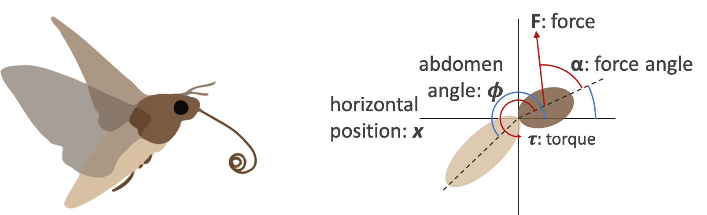

Team Members: Zijian Li, Zhengde Zhao, Yue Zhao
Abstract
Insects like moths managed to do complex tasks like flying, even with astonishingly simple brains. In the experiment, the researchers built deep neural networks to learn the non-linear controller for the flight dynamics of a virtual moth. This interactive visualization system shows the activities in the neural network of the virtual moth, with customized input values and model. Feel free to play with the system by choosing different input values!
Building a Virtual Moth
Running Instructions
Choose a model size from the pull-down menu. For large and max size, it will take a while to process.
Brush the axis to choose the number of edge being displayed based on the their weights.
Change the input value to see how the neurons fire in the neural network.
Drag a node to reposition it.
Hover on a node or edge to see more information.